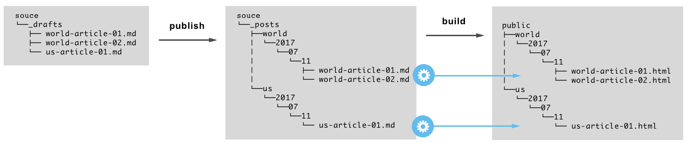

Glayu is a static site generator focused on mid-sized sites, that generate content frequently and have to deal with multiple categories, like magazines and newspapers.
What makes Glayu different from other static site generators is the way it structures the source folder: when you publish an article using Glayu, the markdown file is placed inside a subfolder of the source directory following the permalink definition.
With the default permalink definition categories/year/month/day/title your source and public directories will look like:

The motivation of this source folder organization is to split the site content in smaller units that can be managed independently. Glayu takes advance of this folder organization to enable the concurrent and partial generation of the site.
In the previous example a complete build of the site will handle the /source/_posts/world/2017/07/11 and /source/_posts/us/2017/11 folders concurrently.
Glayu enables the partial generation of the site by using regular expressions, so if you will be interested in only generate the world articles you could use the build command like this:
$ glayu build _posts/world*Pre-requisites: Erlang installed on your machine.
Get the latest Glayu binary, grant execution permissions if needed, and add it to your PATH
Init the site.
$ glayu init glayu_site
🐦 Your Glayu site has been created at ${PATH_TO_SITE}/glayu_siteCreate your first post.
$ cd ./glayu_site
$ glayu new "My First Glayu Article"
🐦 Post created at ${PATH_TO_SITE}/glayu_site/source/_drafts/my-first-glayu-article.mdPublish your post.
$ glayu publish my-first-glayu-article.md
🐦 Draft published to ${PATH_TO_SITE}/glayu_site/source/_posts/software/static-sites/2017/07/11/my-first-glayu-article.mdBuild the site.
$ glayu build
✓ Site pages generated.
└── 1 pages generated.
✓ Category pages generated.
└── 2 category pages generated.
✓ Home page generated.
✓ Site assets copied from theme folder to public folder.
└── 20 files copied.
🐦 Site Generated Successfully.The site pages are generated under ../glayu_site/public